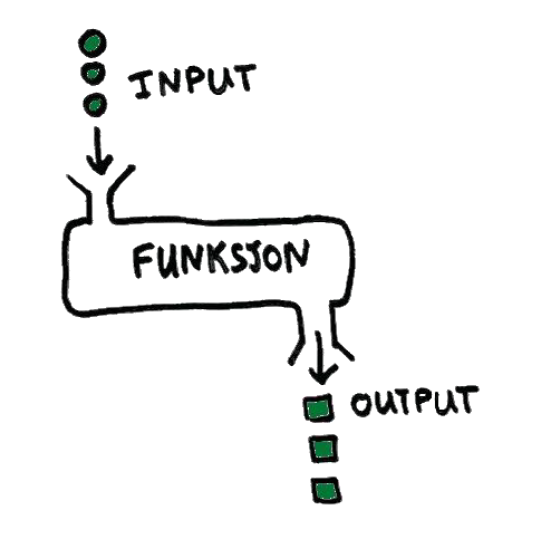
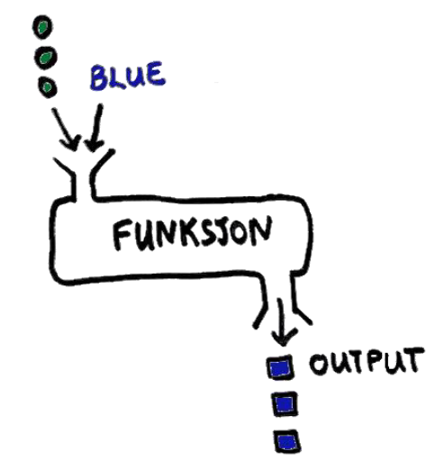
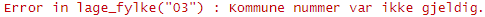

min_func <- function(){
print("hello")
}Funksjoner
Hva er en funksjon?
En funksjon er en del av kode som kan brukes om-og-om igjen. Den har en input (det som sendes inn til funksjonen) og en output (det som kommer ut).

Parameter er tilleggsinformasjon som sendes inn til funksjonen for å spesifisere mer.

Bruk av funksjoner kan være nyttig: - Gjenbruk - Abstraksjon (trenger ikke å vite hvordan)
Lage en enkel funksjon
Vi lager en funksjon ved å allokere det et navn og spesifisere function(). For eks
Og etterpå kjøre vi funksjonen ved
min_func()[1] "hello"Lage en funksjon for fylke
Her skal vi lage en funksjon som ta kommunenummer som input og returnere fylkenummer. Vi spesifisere kommunenummer som en parameter i funksjonen. Vi bruker substr() for å plukke ut de første to siffer.
lage_fylke <- function(kommunenr){
substr(kommunenr, 1, 2)
}
lage_fylke("0301")[1] "03"Funksjoner kan gå over flere linjer. Den siste linjen er det som returneres. Det kan også spesifiseres med return() ved behov, særlig i kompleks funksjoner med multiple output.
Flere parameter
Funksjoner kan ta mer enn èn paramter. For eksempel i fylke-funksjonen vi kanskje ønsker å sjekke lengde for å se om ledende 0-er har falt av.
lage_fylke <- function(kommunenr, sjekk_lengde){
if(sjekk_lengde == TRUE){
kommunenr <- ifelse(nchar(kommunenr) == 3,
paste("0", kommunenr, sep = ""),
kommunenr)
}
fylke <- substr(kommunenr, 1, 2)
fylke
}lage_fylke(kommunenr = "301", sjekk_lengde = TRUE)[1] "03"lage_fylke(kommunenr = "301", sjekk_lengde = FALSE)[1] "30"Standard/default parameter
Vi kan sett et parameter verdier for å slippe å spesifisere hver gang. For eksemepel, samme funksjon over kan har sjekk_lengde=TRUE som standard.
lage_fylke <- function(kommunenr, sjekk_lengde = TRUE){
if(sjekk_lengde == TRUE){
kommunenr <- ifelse(nchar(kommunenr) == 3,
paste("0", kommunenr, sep = ""),
kommunenr)
}
fylke <- substr(kommunenr, 1, 2)
fylke
}
lage_fylke("301")[1] "03"Noen ganger kalles disse for “named parameters” eller “keyword arguements”. Standard parameter alltid kommer til sist
Global vs Lokal-miljø
Når vi lage en funksjon, lage vi en liten lokal-miljø. Varaiabler som lagres inn i en funksjon påvirke ikke global-miljø og er slettet når funksjonen er ferdig-kjørt. For eksempel om vi har en enkel function som returneres verdien av parameter x vil ikke dette påvirke om vi har en x i det global-miljøet:
funcx <- function(x){
x
}x <- 2
funcx(x = 4)[1] 4x[1] 2Varsling i funksjoner
Noen ganger øsnker vi at funksjonen si ifra om noen er litt rart eller feil. For at funksjonen skal stoppe bruk stop(). For at det skal gi et varsel bruk warning().
For eksempel, her stoppe funksjon om kommunenr er kun 2-siffer. Ved 3-siffer gis et varsel at en ledende 0 er lagt på.
lage_fylke <- function(kommunenr){
if (nchar(kommunenr) <= 2){
stop("Kommune nummer var ikke gjeldig.")
}
if (nchar(kommunenr) == 3){
warning("Kommunenummer er lendge 3 og har blitt fylt med en ledende 0\n")
kommunenr <- paste("0", kommunenr, sep = "")
}
fylke <- substr(kommunenr, 1, 2)
fylke
}lage_fylke(kommunenr = "03")
lage_fylke(kommunenr = "301")Warning in lage_fylke(kommunenr = "301"): Kommunenummer er lendge 3 og har blitt fylt med en ledende 0[1] "03"lage_fylke(kommunenr = "0301")[1] "03"